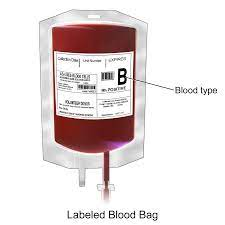
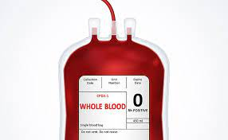
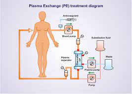
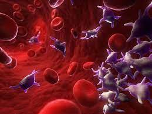
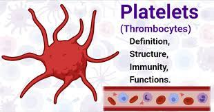

E-mail ID: rishav200325raj@gmail.com , manitraina2003@gmail.com
Contact No.: 80xxxxxxx , 90xxxxxxx
Address:Lovely Professional University, Sub. Dist.-Phagwara, Jalandhar, PUNJAB
know more about us on


Healthcare providers use four different blood products in transfusions: whole blood, power red, platelets, and AB elite plasma. The donation criteria vary slightly depending on the product.
Whole blood consists of red and white blood cells, platelets, and plasma. Blood banks process whole blood into their different components, as most people in need of a blood transfusion do not require them all.
To donate whole blood, people must:People can donate whole blood every 56 days (8 weeks). This interval gives the body time to replenish lost blood.
 People can donate power red by apheresis. This process takes out the necessary component from whole blood, sending the rest of the unneeded blood back into the donor’s body.
The National Institutes of Health Blood Bank have a process called Double Red Cell Apheresis (DRCA). DRCA allows blood bank workers to take two units of power red, the equivalent of two donations, in one sitting.
To donate power red, people must:
People can donate power red every 112 days. They cannot donate more than three times a year.
Platelets are cells in whole blood that help blood clot. The body produces platelets in bone marrow and stores them in the spleen.
When a person injures themselves, platelets form a protective barrier at the site of injury to stop the wound from bleeding. Platelet donors can undergo apheresis to extract the platelets from whole blood.
To donate platelets, people must:
People can donate platelets every 7 days. They cannot donate more than 24 times a year.
 Plasma is a pale yellow liquid in whole blood. It helps fight infection and encourages blood to clot. AB plasma is a universal donor plasma because it is compatible with all blood types. Plasma donors can undergo apheresis to take out the plasma from whole blood.
To donate AB elite plasma, people must:
E-mail ID: rishav200325raj@gmail.com , manitraina2003@gmail.com
Contact No.: 80xxxxxxx , 90xxxxxxx
Address:Lovely Professional University, Sub. Dist.-Phagwara, Jalandhar, PUNJAB
know more about us on